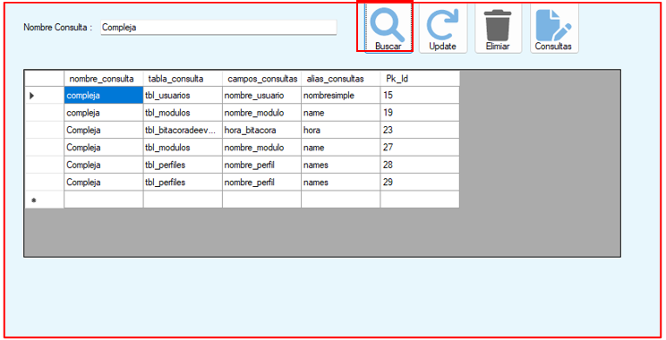
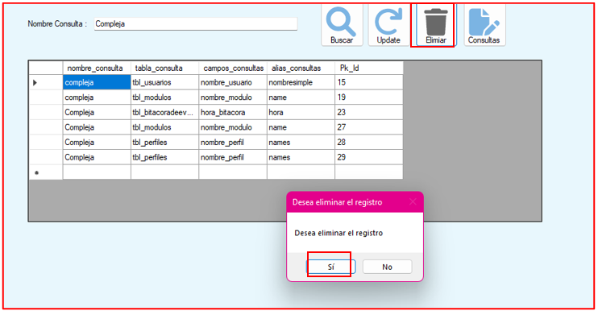
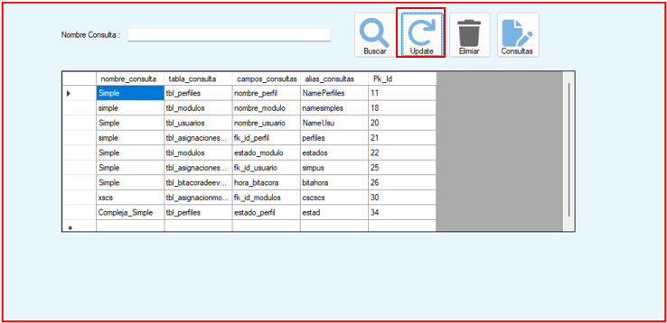

Primero debe de consultar los registros de consultas.Se desplegara los datos ingresados de las consultas

El botón buscar tiene como funcionalidad buscar todos los nombres de consulta En este caso buscaremos la consulta compleja .
El botón eliminar, eliminara todas las consultas complejas que se hallan realizado Nos sacara un mensaje de seguridad para poder eliminar los registros Click en si, se eliminaran las consultas complejas .
Luego el botón Update, actualizara la tabla de consultas y solo aparecerán los registros no llamados compleja
